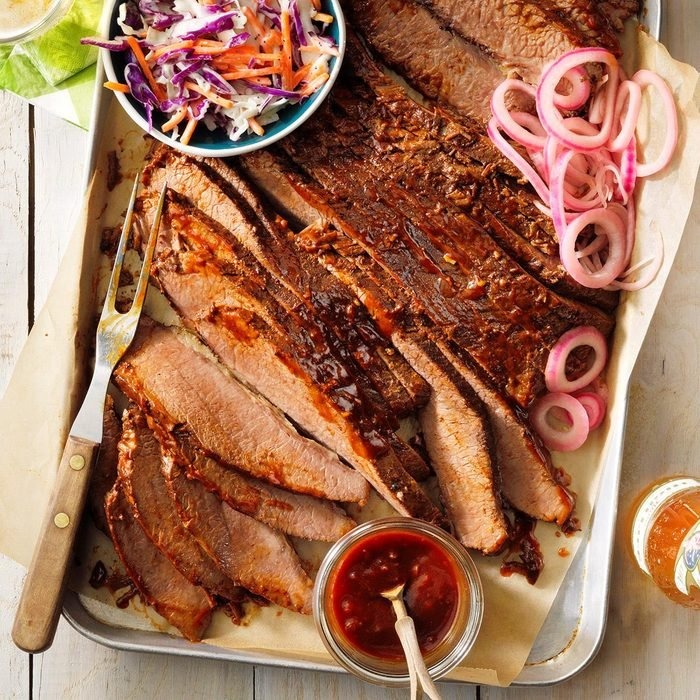

Texas-Style Beef Brisket
Ingredients
- 3 tablespoons Worcestershire sauce
- 1 tablespoon chili powder
- 2 garlic cloves, minced
- 1 teaspoon celery salt
- 1 teaspoon pepper
- 1 teaspoon liquid smoke, optional
- 1 fresh beef brisket (6 pounds)
- 1/2 cup beef broth
- 2 bay leaves
- 1/2 cup barbecue sauce